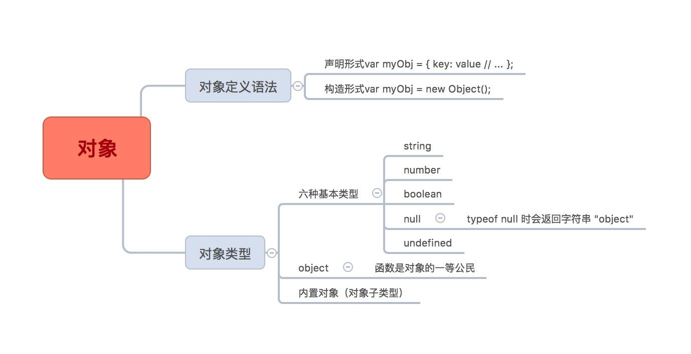

this 解析
如果要判断一个运行中函数的 this 绑定,就需要找到这个函数的直接调用位置。找到之后 就可以顺序应用下面这四条规则来判断 this 的绑定对象。
1 由 new 调用?绑定到新创建的对象。
2 由 call 或者 apply (或者 bind )调用?绑定到指定的对象。
3 由上下文对象调用?绑定到那个上下文对象。
4 默认:在严格模式下绑定到 undefined ,否则绑定到全局对象。
一定要注意,有些调用可能在无意中使用默认绑定规则。如果想“更安全”地忽略 this 绑 定,你可以使用一个 DMZ 对象,比如 ø = Object.create(null) ,以保护全局对象。ES6中的箭头函数并不会使用四条标准的绑定规则, 而是根据当前的词法作用域来决定 this ,具体来说,箭头函数会继承外层函数调用的 this 绑定(无论 this 绑定到什么)。这 其实和 ES6 之前代码中的 self = this 机制一样。
对象

JavaScript 中的对象有字面形式(比如 var a = { .. } )和构造形式(比如 var a = new Array(..) )。字面形式更常用,不过有时候构造形式可以提供更多选项。
许多人都以为“JavaScript 中万物都是对象”,这是错误的。对象是 6 个(或者是 7 个,取 决于你的观点)基础类型之一。对象有包括 function 在内的子类型,不同子类型具有不同 的行为,比如内部标签 [object Array] 表示这是对象的子类型数组。
对象就是键 / 值对的集合。可以通过 .propName 或者 [“propName”] 语法来获取属性值。访 问属性时, 引擎实际上会调用内部的默认 [[Get]] 操作(在设置属性值时是 [[Put]] ), [[Get]] 操作会检查对象本身是否包含这个属性,如果没找到的话还会查找 [[Prototype]] 链(参见第 5 章)。
属性的特性可以通过属性描述符来控制,比如 writable 和 configurable 。此外,可以使用 Object.preventExtensions(..) 、 Object.seal(..) 和 Object.freeze(..) 来设置对象(及其 属性)的不可变性级别。
属性不一定包含值——它们可能是具备 getter/setter 的“访问描述符”。此外,属性可以是 可枚举或者不可枚举的,这决定了它们是否会出现在 for..in 循环中。
你可以使用 ES6 的 for..of 语法来遍历数据结构(数组、对象, 等等)中的值, for..of 会寻找内置或者自定义的 @@iterator 对象并调用它的 next() 方法来遍历数据值。
混合对象类
类是一种设计模式。 许多语言提供了对于面向类软件设计的原生语法。 JavaScript 也有类 似的语法,但是和其他语言中的类完全不同。
类意味着复制。
传统的类被实例化时,它的行为会被复制到实例中。类被继承时,行为也会被复制到子类 中。
多态(在继承链的不同层次名称相同但是功能不同的函数)看起来似乎是从子类引用父 类,但是本质上引用的其实是复制的结果。
JavaScript 并不会(像类那样)自动创建对象的副本。
混入模式(无论显式还是隐式)可以用来模拟类的复制行为,但是通常会产生丑陋并且脆 弱的语法,比如显式伪多态( OtherObj.methodName.call(this, …) ),这会让代码更加难 懂并且难以维护。
此外, 显式混入实际上无法完全模拟类的复制行为, 因为对象(和函数!别忘了函数也 是对象)只能复制引用, 无法复制被引用的对象或者函数本身。 忽视这一点会导致许多 问题。
总地来说,在 JavaScript 中模拟类是得不偿失的,虽然能解决当前的问题,但是可能会埋下更多的隐患。
原型
如果要访问对象中并不存在的一个属性, [[Get]] 操作(参见第 3 章)就会查找对象内部 [[Prototype]] 关联的对象。这个关联关系实际上定义了一条“原型链”(有点像嵌套的作用域链),在查找属性时会对它进行遍历。
所有普通对象都有内置的 Object.prototype ,指向原型链的顶端(比如说全局作用域),如 果在原型链中找不到指定的属性就会停止。 toString() 、 valueOf() 和其他一些通用的功能 都存在于 Object.prototype 对象上,因此语言中所有的对象都可以使用它们。
关联两个对象最常用的方法是使用 new 关键词进行函数调用, 在调用的 章)中会创建一个关联其他对象的新对象。4个步骤(第2章)中会创建一个关联其他对象的新对象。
使用 new 调用函数时会把新对象的 .prototype 属性关联到“其他对象”。带 new 的函数调用 通常被称为“构造函数调用”,尽管它们实际上和传统面向类语言中的 类构造函数 不一样。
JavaScript 是 中的机制有一个核心区别, 那就是不会进行复制, 对象之间是通过内部的
虽然这些 机制和传统面向类语言中的“类初始化”和“类继承”很相似, 但是 javascript 机制和传统面向对象类语言中的“类初始化”和“类继承”很相似但是 javascript 中的机制有一个核心区别，就是不会进行复制，对象之间是通过内部的 [[Prototype]] 链关联的。
出于各种原因,以“继承”结尾的术语(包括“原型继承”)和其他面向对象的术语都无 法帮助你理解 JavaScript 的 真实 机制(不仅仅是限制我们的思维模式)。
相比之下,“委托”是一个更合适的术语,因为对象之间的关系不是 复制 而是委托。
行为委托
在软件架构中你可以 选择是否 使用类和继承设计模式。大多数开发者理所当然地认为类是 唯一(合适)的代码组织方式,但是本章中我们看到了另一种更少见但是更强大的设计模式: 行为委托 。
行为委托认为对象之间是兄弟关系, 互相委托, 而不是父类和子类的关系。 JavaScript 的 [[Prototype]] 机制本质上就是行为委托机制。也就是说,我们可以选择在 JavaScript 中努 力实现类机制(参见第 4 和第 5 章),也可以拥抱更自然的 [[Prototype]] 委托机制。
当你只用对象来设计代码时,不仅可以让语法更加简洁,而且可以让代码结构更加清晰。
对象关联(对象之前互相关联)是一种编码风格,它倡导的是直接创建和关联对象,不把 它们抽象成类。对象关联可以用基于 [[Prototype]] 的行为委托非常自然地实现。